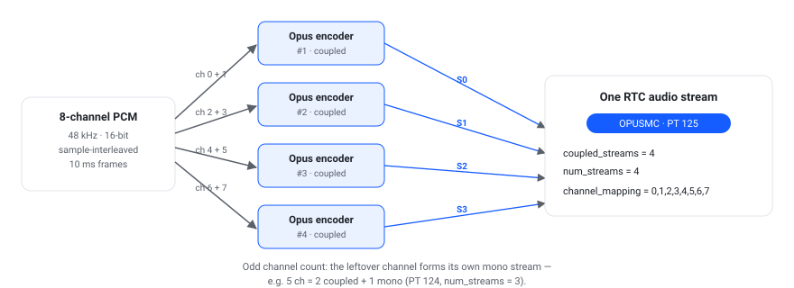
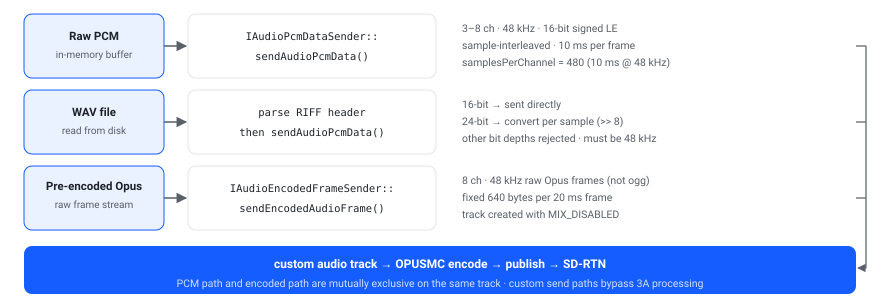
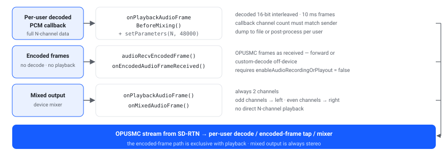
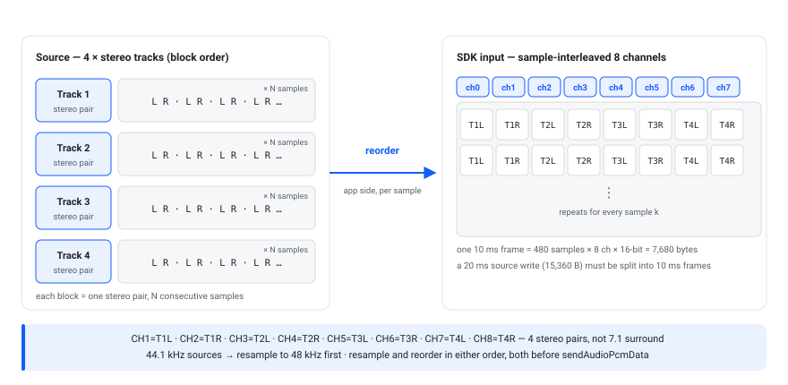

Linux SDK 音频多声道（multiopus）
适用版本：Agora Linux SDK v4.2.32 / v4.4.30.x（x86_64 与 aarch64，C++）
一、功能说明
1.1 OPUSMC 编码原理
多声道编码使用 Opus 编码器的多流（multistream）模式：每两个声道由一个 Opus 编码器实例编码 （一个 coupled stream），奇数声道时剩余一路单独成流，因此 8 声道需要 4 个 Opus 编码器实例。 编码能力来源于 SDK 的 Ambisonic 空间音频项目。多声道编解码仅支持 48 kHz 采样率 （编码/解码均是），非 48 kHz 素材须先重采样。
由于多声道码率明显高于普通 Opus，弱网或高丢包场景下可能需要对拥塞控制（CC）策略进行适配， 以保证传输稳定。
| payload type | 声道数 | 采样率 | channel_mapping | coupled_streams | num_streams |
|---|---|---|---|---|---|
| 123 | 3 | 48000 | 0,1,2 | 1 | 2 |
| 123 | 4 | 48000 | 0,1,2,3 | 2 | 2 |
| 124 | 5 | 48000 | 0,1,2,3,4 | 2 | 3 |
| 124 | 6 | 48000 | 0,1,2,3,4,5 | 3 | 3 |
| 125 | 7 | 48000 | 0,1,2,3,4,5,6 | 3 | 4 |
| 125 | 8 | 48000 | 0,1,2,3,4,5,6,7 | 4 | 4 |
其中 coupled stream 指两个声道编码为一条流，num_streams 为总流数；123 默认 4 声道、
124 默认 6 声道、125 默认 8 声道，3/5/7 声道需额外设置
che.audio.custom_channel_num。

1.2 发送：三条输入路径
| 路径 | 接口 | 格式要求 |
|---|---|---|
| raw PCM 发送 | IAudioPcmDataSender::sendAudioPcmData |
3~8 声道、48 kHz、16bit 有符号小端、逐样本交错；10 ms/帧（samplesPerChannel = 480） |
| WAV 文件发送 | 同上（先解析 RIFF 头） | 16bit 直发；24bit 逐样本转 16bit（右移 8bit）后发；其他位深报错；须为 48 kHz |
| 预编码 Opus 发送 | IAudioEncodedFrameSender::sendEncodedAudioFrame |
8 声道 48 kHz Opus 裸帧流（非 ogg 封装），固定 640 字节/帧 = 20 ms；custom audio track 以 MIX_DISABLED 创建 |
PCM 与编码帧两条发送路径互斥（同一条 custom audio track 二选一）；自定义发送路径不经过 3A。
注：旧版参考代码（如 v4.2.32 的 sample_send_opus8）可能使用
AUDIO_CODEC_OPUS8C；在 v4.4.30.x 多声道版本中请使用
AUDIO_CODEC_OPUSMC，并同步设置 che.audio.custom_sample_rate=48000。

1.3 接收：三条获取路径
| 路径 | 接口 | 说明 |
|---|---|---|
| 按用户解码 PCM 回调 | onPlaybackAudioFrameBeforeMixing + setPlaybackAudioFrameBeforeMixingParameters |
按远端用户回调解码后的多声道 PCM（16bit 交错，10ms 帧）；回调声道数须与发送端一致才能拿到完整多声道 |
| 编码帧回调 | audioRecvEncodedFrame + onEncodedAudioFrameReceived |
不解码不播放，直接拿到 OPUSMC 编码帧，用于转发或自行解码；需 enableAudioRecordingOrPlayout=false，与播放路径互斥 |
| 混音输出 | onPlaybackAudioFrame / onMixedAudioFrame |
混音输出恒为 2 声道：按 CH1 起编号的奇数声道混一路、偶数声道混一路（设计文档未约定奇/偶与左/右的对应关系）；不支持 N 声道直接播放 |

1.4 能力协商与回退
- OPUSMC 通过能力协商机制确定可用性；Linux 发送时，若不支持多声道的端加入频道，发送端编解码回退为普通 Opus（OPUSFB），多声道能力失效（设计文档对回退目标的表述不一致——Linux 侧记为单声道、Web 侧记为双声道，以实际版本行为为准）。
PUnsupportedAudioCodec广播：Web 端加入会触发 VOS 广播该包；SDK 收到后若当前 codec 为多声道则不执行回退（该包仅用于关闭 DTX）。- 强制不回退：设置私参
"che.audio.codec_unfallback": [123, 124, 125]后，整个频道强制使用多声道能力，即使个别参与者不支持，其余参与者仍保持多声道收发。该参数的设置位置有特殊要求，见下文集成指南。 - 声道数大于 4 时，发送端与接收端的声道数配置必须一致；Web 端仅支持偶数声道解码。
1.5 4×stereo → 8 声道布局映射
广播制作中常见的一类源端布局：8 声道内容以 4 条双声道（stereo）音轨承载
（如 4 × AC-3、44.1 kHz 的封装），PCM 按 track 块序排列
（[T1L,T1R]×N [T2L,T2R]×N [T3L,T3R]×N [T4L,T4R]×N），不能直接喂给
sendAudioPcmData。需在业务侧先重排为 Agora 8 声道逐样本交错布局：
声道顺序：CH1=T1L, CH2=T1R, CH3=T2L, CH4=T2R, CH5=T3L, CH6=T3R, CH7=T4L, CH8=T4R
缓冲区按 [T1L,T1R,T2L,T2R,T3L,T3R,T4L,T4R] 每样本重复排列
- 声道对 (0,1)(2,3)(4,5)(6,7) 分别对应轨 1~4，与 8 声道 OPUSMC 4 个 coupled stream 的配对一致；这种 8 声道为 4 个独立立体声对，非 7.1 环绕布局。
- 若源端单次写入 15360 字节（= 8 声道 × 16bit × 960 样本 = 20 ms @ 48 kHz），送入 SDK 前需拆分为 10 ms 帧。
- 源为 44.1 kHz 时必须先重采样到 48 kHz；重采样与重排顺序无关，但都须在
sendAudioPcmData之前完成。 - 某些源端提供 4 条 AC-3 stereo track，各轨采样率可能为 44.1 kHz 且时长存在细微差异；解码后须先统一重采样到 48 kHz，再按上述布局重排成交错 PCM。
- 常见集成错误：把逐样本交错数据按平面块序（LLL…RRR…）读取，会导致接收端杂音。
二、集成指南
2.1 私参与设置时机（重要）
| 私参 | 设置位置 | 时机 |
|---|---|---|
che.audio.custom_payload_typeche.audio.custom_channel_numche.audio.custom_sample_rate |
connection 级：connection->getAgoraParameter() |
createRtcConnection 之后、connect() 之前；connect 之后设置不生效 |
che.audio.codec_unfallback（JSON 数组，如 [123,124,125]） |
service 级：service->getAgoraParameter() |
createRtcConnection() 之前；设在 connection 级不生效（CSE 实测） |
发送端必须设置 payload type 系列参数；接收端在 123/124/125 协商机制下无需设置
che.audio.custom_payload_type，但 PCM 回调声道数须与发送端一致。
2.2 关键 API 调用顺序（发送 PCM）
// 1. service 级（createRtcConnection 之前）：强制不回退（可选）
service->getAgoraParameter()->setArray("che.audio.codec_unfallback", "[123,124,125]");
// 2. 创建 connection 后、connect 之前：开启多声道编码（以 8 声道为例）
auto p = connection->getAgoraParameter();
p->setInt("che.audio.custom_payload_type", 125);
p->setInt("che.audio.custom_channel_num", 8);
p->setInt("che.audio.custom_sample_rate", 48000);
connection->connect(token, channelId, userId);
// 3. 创建 PCM sender 与 custom audio track 并发布
auto factory = service->createMediaNodeFactory();
auto sender = factory->createAudioPcmDataSender();
auto track = service->createCustomAudioTrack(sender);
connection->getLocalUser()->publishAudio(track);
// 4. 以 10ms 节奏发送交错 PCM（samplesPerChannel = 48000/100）
sender->sendAudioPcmData(frameBuf, 0, 0, 480,
agora::rtc::TWO_BYTES_PER_SAMPLE, 8, 48000);2.3 预编码 Opus 发送（8 声道）
// track 以 MIX_DISABLED 创建（预编码发送不经 3A / 混音）
auto track = service->createCustomAudioTrack(audioFrameSender,
agora::base::MIX_DISABLED);
// 每 20ms 发送一帧（640 字节裸 Opus 帧）
agora::rtc::EncodedAudioFrameInfo info;
info.codec = agora::rtc::AUDIO_CODEC_TYPE::AUDIO_CODEC_OPUSMC;
info.numberOfChannels = 8;
info.sampleRateHz = 48000;
info.samplesPerChannel = 960; // 20 ms @ 48 kHz
audioFrameSender->sendEncodedAudioFrame(frameBuf, sizeof(frameBuf), info);2.4 接收（按用户解码 PCM）
// 回调声道数必须与发送端一致才能拿到完整多声道
connection->getLocalUser()
->setPlaybackAudioFrameBeforeMixingParameters(8, 48000);
// 在 IAudioFrameObserverBase 回调中按远端用户获取解码 PCM：
// onPlaybackAudioFrameBeforeMixing(channelId, userId, audioFrame)
// audioFrame.channels == 8，buffer 为 16bit 交错 PCM，可落盘或后处理2.5 本仓库 Demo 与运行示例
Demo/linux/ 提供 8 个 sample（发送 4 个 + 接收 4 个，覆盖 §1.2/§1.3 的全部收发路径；
另含一对 MKV 音视频收发 sample：发送端用 ffmpeg 解封装/解码 MKV（mpeg4 视频 + 4×AC-3 立体声轨），
重采样并重排为 8 声道后音视频同发），构建与详细参数见其 README：
cd Demo/linux
./build.sh x86_64 # 或 aarch64；产物与 public/ 素材均在 out/ 下
cd out # 以下命令在 out/ 目录内执行
# 发送 8 声道 WAV（16bit）
./sample_send_wav_multiopus --channelId <name> --token <token> \
--audioFile "public/8_Channel_ID_signed_16_bit_pcm.wav" \
--numOfChannels 8 --custom_channel_num 8 --custom_payload_type 125 --sampleRate 48000
# 发送预编码 8 声道 Opus 裸流
./sample_send_opus8 --channelId <name> --token <token> --audioFile "public/8ch_2.opus"
# 接收多声道 PCM（按用户回调 + 落盘）
./sample_receive_pcm_multiopus --channelId <name> --token <token> \
--numOfChannels 8 --sampleRate 48000 --audioFile received_8ch.pcm
# 接收混音输出（恒 2 声道，落盘）
./sample_receive_mixed_audio --channelId <name> --token <token> --audioFile received_mixed.pcm
# 发送 MKV 音视频（ffmpeg 解封装/解码，4×stereo → 8 声道 + I420 视频）
./sample_send_mkv_multiopus --channelId <name> --token <token> --videoFile public/VictoriaMulti.mkv
# 接收音视频（8 声道 PCM + I420 YUV 落盘）
./sample_receive_av_multiopus --channelId <name> --token <token> \
--remoteUserId <uid> --audioFile received_8ch.pcm --videoFile received.yuv
# 所有发送 sample 支持 --codecUnfallback 1 开启强制不回退（须带值，裸开关会被参数解析器拒绝）2.6 验证方法
-
编码器日志：配置生效判据为日志出现
MultistreamEncoder channel num:N rate:48000 coupled:M channel_mapping:... bitrate:...，例如MultistreamEncoder channel num:4 rate:48000 coupled:2 channel_mapping:0 1 2 3 bitrate:128000。 -
PCM 落盘回放：接收落盘文件为 48 kHz / N 声道 / 16bit 小端交错裸 PCM，可用 ffplay 直接验证：
ffplay -f s16le -ar 48000 -ch_layout 7.1 received_8ch.pcm # 8 声道示例 -
配合 Web demo：用 在线 Web 验证 Demo（或本仓库
Demo/web/）订阅同一频道，getVolumeLevels()数组长度应等于声道数、codec 显示multiopus； 发送 Channel ID 素材可逐声道试听核对布局映射。详见 Web SDK 文档。 -
dump 文件：日志目录放置名为
multi_channel.pcm的素材（声道数与custom_channel_num一致）可喂入编码器；可生成before_encoded.pcm（解码后，声道数与编码前一致）与mixed_output.pcm（混音后，恒 2 声道）。
三、SDK 下载
多声道验证推荐使用 v4.4.30.149（x86_64 / aarch64），与 Demo/linux 当前适配版本一致：
- x86_64： Agora-RTC-x86_64-linux-gnu-v4.4.30.149-20260127_144108-1004142.tgz
- aarch64： Agora-RTC-aarch64-linux-gnu-v4.4.30.149-20260127_144949-1004143.tgz
注：本仓库发送 sample 已移除参考 sample（sample_send_h264_pcm_multiopus*.cpp）中的 H264 视频发送逻辑，仅保留音频多声道演示。
Linux SDK Audio Multi-Channel (multiopus)
Applies to: Agora Linux SDK v4.2.32 / v4.4.30.x (x86_64 and aarch64, C++)
1. Feature Description
1.1 OPUSMC encoding
Multi-channel encoding uses the multistream mode of the Opus encoder: every two channels are encoded by one Opus encoder instance (one coupled stream), and with an odd channel count the remaining channel forms its own stream — so 8 channels require 4 Opus encoder instances. The capability originates from the SDK's Ambisonic spatial audio project. Multi-channel encoding and decoding only support 48 kHz; material at other sample rates must be resampled first.
Because multi-channel audio has a significantly higher bitrate than plain Opus, congestion control (CC) may need to be tuned under weak-network or high-packet-loss conditions to keep transmission stable.
| payload type | channels | sample rate | channel_mapping | coupled_streams | num_streams |
|---|---|---|---|---|---|
| 123 | 3 | 48000 | 0,1,2 | 1 | 2 |
| 123 | 4 | 48000 | 0,1,2,3 | 2 | 2 |
| 124 | 5 | 48000 | 0,1,2,3,4 | 2 | 3 |
| 124 | 6 | 48000 | 0,1,2,3,4,5 | 3 | 3 |
| 125 | 7 | 48000 | 0,1,2,3,4,5,6 | 3 | 4 |
| 125 | 8 | 48000 | 0,1,2,3,4,5,6,7 | 4 | 4 |
A coupled stream encodes two channels into one stream; num_streams is the total stream
count. Payload types 123/124/125 default to 4/6/8 channels; 3/5/7 channels require an
explicit che.audio.custom_channel_num.
1.2 Sending: three input paths
| Path | API | Format requirements |
|---|---|---|
| Raw PCM | IAudioPcmDataSender::sendAudioPcmData |
3–8 channels, 48 kHz, 16-bit signed little-endian, sample-interleaved; 10 ms per frame (samplesPerChannel = 480) |
| WAV file | Same as above (parse the RIFF header first) | 16-bit sent directly; 24-bit converted to 16-bit per sample (shift right by 8); other bit depths are rejected; must be 48 kHz |
| Pre-encoded Opus | IAudioEncodedFrameSender::sendEncodedAudioFrame |
8-channel 48 kHz raw Opus frame stream (not ogg), fixed 640 bytes per 20 ms frame; the custom audio track must be created with MIX_DISABLED |
The PCM path and the encoded-frame path are mutually exclusive (choose one per custom audio track); custom send paths do not go through 3A processing.
Note: older reference code (for example the v4.2.32 sample_send_opus8) may use
AUDIO_CODEC_OPUS8C. In the v4.4.30.x multi-channel build use
AUDIO_CODEC_OPUSMC and set che.audio.custom_sample_rate=48000
accordingly.
1.3 Receiving: three paths
| Path | API | Notes |
|---|---|---|
| Per-user decoded PCM callback | onPlaybackAudioFrameBeforeMixing + setPlaybackAudioFrameBeforeMixingParameters |
Delivers decoded multi-channel PCM per remote user (16-bit interleaved, 10 ms frames); the callback channel count must match the sender to recover the full multi-channel data |
| Encoded frame callback | audioRecvEncodedFrame + onEncodedAudioFrameReceived |
Receives OPUSMC encoded frames without decoding or playback, for forwarding or custom decoding; requires enableAudioRecordingOrPlayout=false and is mutually exclusive with the playback path |
| Mixed output | onPlaybackAudioFrame / onMixedAudioFrame |
Mixed output is always 2 channels: channels counted from CH1 — odd channels mixed into one stream, even into the other (the design doc does not define which maps to left/right); direct N-channel playback is not supported |
1.4 Capability negotiation and fallback
- OPUSMC availability is decided through capability negotiation. When Linux is sending, an endpoint without multi-channel support joining the channel makes the sender fall back to plain Opus (OPUSFB) and multi-channel stops working (the design docs disagree on the fallback target — the Linux doc says mono, the Web doc says dual-channel; defer to actual version behavior).
PUnsupportedAudioCodecbroadcast: a Web client joining triggers this VOS broadcast; when the SDK receives it and the current codec is multi-channel, it does not fall back (the packet is only used to disable DTX).- Forced no-fallback: setting the private parameter
"che.audio.codec_unfallback": [123, 124, 125]forces the entire channel to use multi-channel — even if some participants do not support it, the others keep multi-channel send/receive. This parameter has a special placement requirement; see the integration guide below. - When the channel count is greater than 4, the sender and receiver channel-count configurations must match; the Web SDK only decodes even channel counts.
1.5 4×stereo → 8-channel layout mapping
A common source layout in broadcast production: 8-channel content is carried as
four stereo tracks (for example, a package with 4 × AC-3 at 44.1 kHz).
The PCM is arranged in track-block order
([T1L,T1R]×N [T2L,T2R]×N [T3L,T3R]×N [T4L,T4R]×N) and cannot be
fed directly to sendAudioPcmData. It must first be reordered on the
application side into Agora's 8-channel sample-interleaved layout:
Channel order: CH1=T1L, CH2=T1R, CH3=T2L, CH4=T2R, CH5=T3L, CH6=T3R, CH7=T4L, CH8=T4R
The buffer repeats [T1L,T1R,T2L,T2R,T3L,T3R,T4L,T4R] for every sample- Channel pairs (0,1)(2,3)(4,5)(6,7) correspond to tracks 1–4, matching the pairing of the 4 coupled streams in 8-channel OPUSMC; these 8 channels are 4 independent stereo pairs, not a 7.1 surround layout.
- If the source writes 15360 bytes per write (= 8 channels × 16-bit × 960 samples = 20 ms @ 48 kHz), split it into 10 ms frames before sending to the SDK.
- A 44.1 kHz source must be resampled to 48 kHz first; resampling and reordering can happen in either order, but both must finish before
sendAudioPcmData. - Some sources provide four AC-3 stereo tracks. The tracks may be 44.1 kHz and have slightly different durations; after decoding they must all be resampled to 48 kHz and then reordered into the interleaved PCM layout above.
- A common integration mistake is reading sample-interleaved data as planar block order (LLL…RRR…), which causes noise at the receiver.
2. Integration Guide
2.1 Private parameters and timing (important)
| Private parameter | Set on | Timing |
|---|---|---|
che.audio.custom_payload_typeche.audio.custom_channel_numche.audio.custom_sample_rate |
Connection level: connection->getAgoraParameter() |
After createRtcConnection, before connect(); setting after connect has no effect |
che.audio.codec_unfallback (JSON array, e.g. [123,124,125]) |
Service level: service->getAgoraParameter() |
Before createRtcConnection(); setting it at connection level does not work (verified by CSE) |
The sender must set the payload-type family of parameters; the receiver does not need
che.audio.custom_payload_type under the 123/124/125 negotiation mechanism,
but the PCM callback channel count must match the sender.
2.2 Key API call sequence (sending PCM)
// 1. Service level (before createRtcConnection): force no-fallback (optional)
service->getAgoraParameter()->setArray("che.audio.codec_unfallback", "[123,124,125]");
// 2. After creating the connection, before connect: enable multi-channel (8ch example)
auto p = connection->getAgoraParameter();
p->setInt("che.audio.custom_payload_type", 125);
p->setInt("che.audio.custom_channel_num", 8);
p->setInt("che.audio.custom_sample_rate", 48000);
connection->connect(token, channelId, userId);
// 3. Create the PCM sender and a custom audio track, then publish
auto factory = service->createMediaNodeFactory();
auto sender = factory->createAudioPcmDataSender();
auto track = service->createCustomAudioTrack(sender);
connection->getLocalUser()->publishAudio(track);
// 4. Send interleaved PCM at a 10 ms cadence (samplesPerChannel = 48000/100)
sender->sendAudioPcmData(frameBuf, 0, 0, 480,
agora::rtc::TWO_BYTES_PER_SAMPLE, 8, 48000);2.3 Sending pre-encoded Opus (8 channels)
// Create the track with MIX_DISABLED (pre-encoded sending bypasses 3A / mixing)
auto track = service->createCustomAudioTrack(audioFrameSender,
agora::base::MIX_DISABLED);
// Send one frame every 20 ms (640-byte raw Opus frames)
agora::rtc::EncodedAudioFrameInfo info;
info.codec = agora::rtc::AUDIO_CODEC_TYPE::AUDIO_CODEC_OPUSMC;
info.numberOfChannels = 8;
info.sampleRateHz = 48000;
info.samplesPerChannel = 960; // 20 ms @ 48 kHz
audioFrameSender->sendEncodedAudioFrame(frameBuf, sizeof(frameBuf), info);2.4 Receiving (per-user decoded PCM)
// The callback channel count must match the sender to recover all channels
connection->getLocalUser()
->setPlaybackAudioFrameBeforeMixingParameters(8, 48000);
// Receive decoded PCM per remote user in the IAudioFrameObserverBase callback:
// onPlaybackAudioFrameBeforeMixing(channelId, userId, audioFrame)
// audioFrame.channels == 8, buffer is 16-bit interleaved PCM, ready to dump or process2.5 Demos in this repo and run examples
Demo/linux/ provides 8 samples (4 senders + 4 receivers, covering every send/receive path in §1.2/§1.3;
including an MKV A/V pair: the sender uses ffmpeg to demux/decode an MKV (mpeg4 video + 4×AC-3 stereo tracks),
resamples and reorders to 8 channels, and publishes audio+video). See its README for
build details and full parameter lists:
cd Demo/linux
./build.sh x86_64 # or aarch64; binaries and public/ assets land in out/
cd out # run the commands below inside out/
# Send an 8-channel WAV (16-bit)
./sample_send_wav_multiopus --channelId <name> --token <token> \
--audioFile "public/8_Channel_ID_signed_16_bit_pcm.wav" \
--numOfChannels 8 --custom_channel_num 8 --custom_payload_type 125 --sampleRate 48000
# Send a pre-encoded 8-channel raw Opus stream
./sample_send_opus8 --channelId <name> --token <token> --audioFile "public/8ch_2.opus"
# Receive multi-channel PCM (per-user callback + dump to file)
./sample_receive_pcm_multiopus --channelId <name> --token <token> \
--numOfChannels 8 --sampleRate 48000 --audioFile received_8ch.pcm
# Receive the mixed output (always 2 channels, dump to file)
./sample_receive_mixed_audio --channelId <name> --token <token> --audioFile received_mixed.pcm
# Send MKV audio+video (ffmpeg demux/decode, 4×stereo → 8 channels + I420 video)
./sample_send_mkv_multiopus --channelId <name> --token <token> --videoFile public/VictoriaMulti.mkv
# Receive audio+video (8-channel PCM + I420 YUV dump)
./sample_receive_av_multiopus --channelId <name> --token <token> \
--remoteUserId <uid> --audioFile received_8ch.pcm --videoFile received.yuv
# All sender samples support --codecUnfallback 1 to force no-fallback (a value is required; the bare flag is rejected)2.6 Verification
-
Encoder log: the configuration is in effect when the log shows
MultistreamEncoder channel num:N rate:48000 coupled:M channel_mapping:... bitrate:..., for exampleMultistreamEncoder channel num:4 rate:48000 coupled:2 channel_mapping:0 1 2 3 bitrate:128000. -
PCM dump playback: the received dump file is 48 kHz / N-channel / 16-bit
little-endian interleaved raw PCM and can be verified directly with ffplay:
ffplay -f s16le -ar 48000 -ch_layout 7.1 received_8ch.pcm # 8-channel example -
With the Web demo: subscribe to the same channel with the
online Web verification demo
(or
Demo/web/in this repo).getVolumeLevels()should return an array whose length equals the channel count, and the codec should showmultiopus. Send Channel ID material to listen channel by channel and check the layout mapping. See the Web SDK doc. -
Dump files: placing material named
multi_channel.pcm(channel count matchingcustom_channel_num) in the log directory feeds it into the encoder;before_encoded.pcm(decoded data, same channel count as the encoder input) andmixed_output.pcm(mixed data, always 2 channels) can be generated.
3. SDK Download
For multi-channel verification we recommend v4.4.30.149 (x86_64 / aarch64), which is
the version currently matched by Demo/linux:
- x86_64: Agora-RTC-x86_64-linux-gnu-v4.4.30.149-20260127_144108-1004142.tgz
- aarch64: Agora-RTC-aarch64-linux-gnu-v4.4.30.149-20260127_144949-1004143.tgz
Note: the sender samples in this repo have removed the H264 video-sending logic that exists in
the reference samples (sample_send_h264_pcm_multiopus*.cpp) and keep only the
multi-channel audio demonstration.